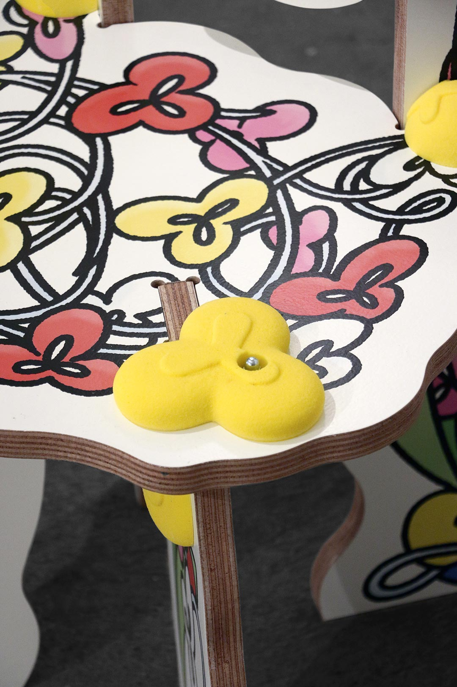
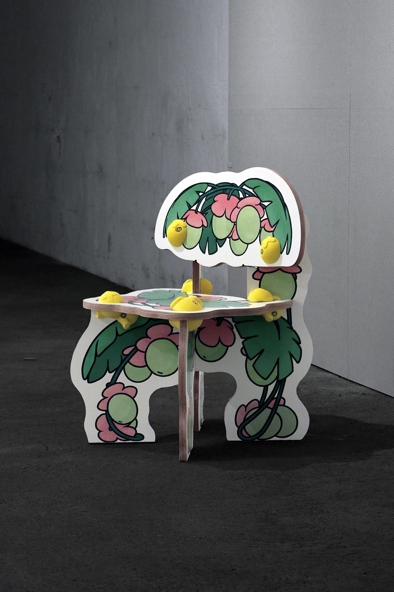
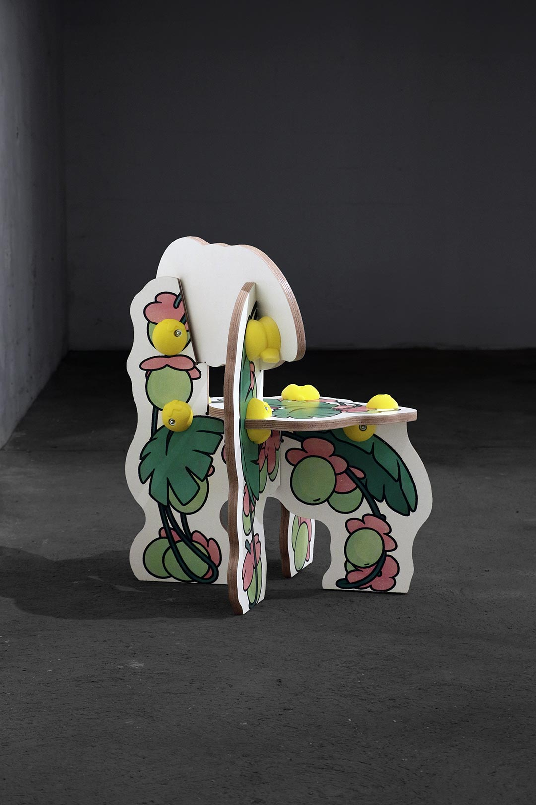
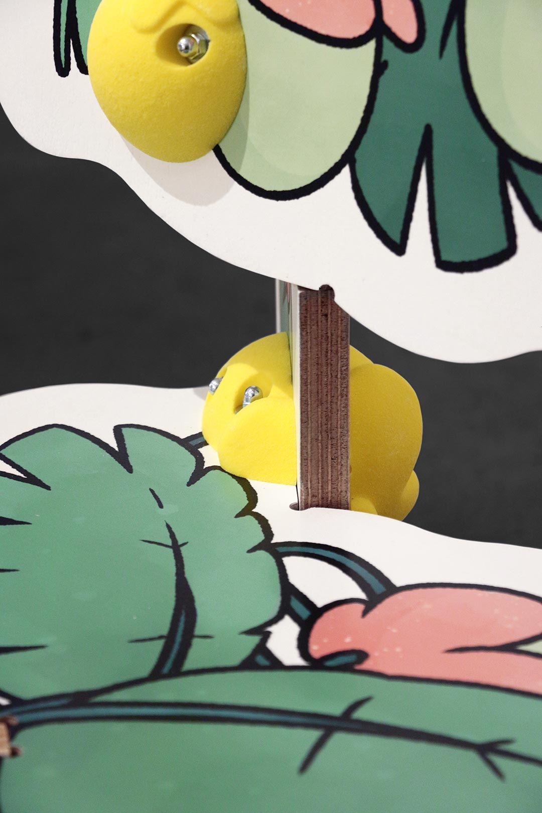
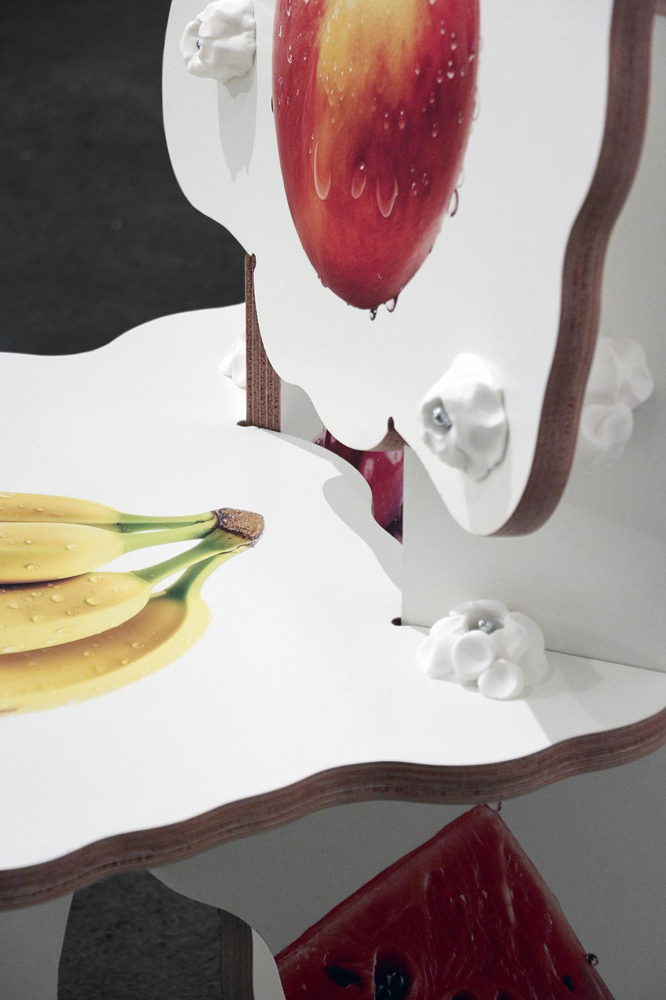
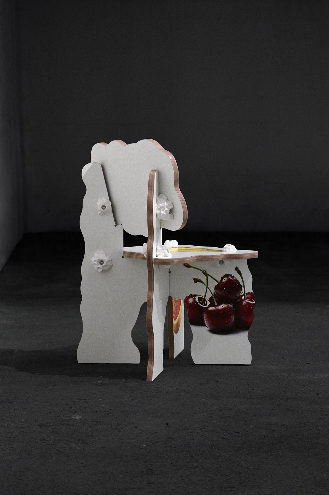

index | shop | info | contact | chaos
Flower Chair, Berries Chair, Palm Chair and Thirst Chair, Flower Garden n°2,
were first presented as part of 'FOKUS: The Series', curated by Laura Houseley↗ for Vienna Design Week↗ 2023. They exist within a larger body of furniture design that juxtaposes the Plush Garden aesthetic with domestic environments, embodying playful, toy-like furniture proportions.
The collection of wannabe-rococo chairs feature exaggerated, cartoon-like forms, blending visual references from children’s dollhouses, biophilic design, 17th-century interiors, video games, and public kindergartens.
Flower Garden n°2 (2023) | Okoume plywood, CNC cut, acrylic paint, UV print, polyurethane (available via shop)
Flower Chair, Flower Garden n°2 (2023) | Okoume plywood, CNC cut, acrylic paint, UV print, polyurethane | 89. 55. 56cm (2 available via shop)



Palm Chair, Flower Garden n°2 (2023) | Okoume plywood, CNC cut, acrylic paint, UV print, polyurethane | 84. 60. 59cm (1 available via shop)



Thirst Chair, Flower Garden n°2 (2023) | Okoume plywood, CNC cut, acrylic paint, UV print, polyurethane | 89. 55. 56cm (1 available via shop)



*This website was last updated on July 1, 2026.